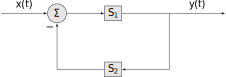
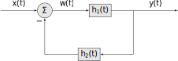
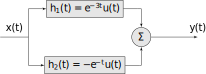
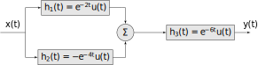
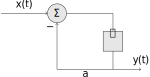
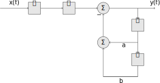
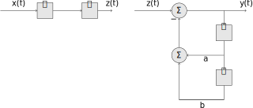
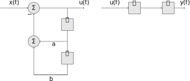
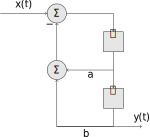

10 CT Block Diagrams
10.1 The Four Basic Motifs
Understanding complex systems, with many interconnections, is aided by graphical representations, generally called block diagrams [^1]. They are a hybrid graphical-analytical approach.
There are just four basic motifs needed to build any block diagram. Let \(\mathcal{S}_i\) denote a (sub) system. Then the four motifs are:
- A single block.
- A series connection of two blocks
- A parallel connection of two blocks
- A feedback connection

Note the feedback is negative (the minus sign on the feedback summation input). These can be use in various combinations, as we shall see shortly.
10.2 Connections to Convolution
Each subsystem, \(\mathcal{S}_i\), can be represented by a basic time-domain operation (e.g. derivatives, integrals, addition, and scaling) or more generally by its impulse response \(h_i(t)\). For example a block representing an system acting as integrator is typically drawn as
This is equivalent to an impulse response \(h(t) = u(t)\) so that it might also be drawn as
We can use the concept of convolution to connect block diagrams to the properties of convolution
A single block is equivalent to convolution with the impulse response for that subsystem
Block diagram representation as convolution of input with impulse response. Using the associative property, a series connection of two blocks becomes
Block diagram of a series connection representation as convolution of two impulse responses. which can be reduced to a single convolution \(y(t) = h_3(t)*x(t)\) where \(h_3(t) = h_1(t)*h_2(t)\).
Using the distributive property, a parallel connection of two blocks becomes
Block diagram of a parallel connection representation as summation of two impulse responses. which is equivalent to a single convolution \(y(t) = h_3(t)*x(t)\) where \(h_3(t) = h_1(t) + h_2(t)\).
In the feedback connection let \(w(t)\) be the output of the summation

Block diagram of a feedback connection. Then \(y(t) = h_1(t)*w(t)\) and \(w(t) = x(t) - h_2(t)*y(t)\). Substituting the later into the former gives \(y(t) = h_1*(x-h_2(t)*y(t))\). Using the distributive property we get \(y(t) = h_1(t)*x(t) - h_1(t)*h_2(t)*y(t)\). Isolating the input on the right-hand side and using \(y(t) = \delta(t)*y(t)\) we get \[y(t) + h_1(t)*h_2(t)*y(t) = \left[\delta(t) + h_1(t)*h_2(t)\right]*y(t) = h_1(t)*x(t)\] We can solve this for \(y(t)\) using the concept of inverse systems. Let \(h_3(t)* \left[\delta(t) + h_1(t)*h_2(t)\right]= \delta(t)\), i.e. \(h_3\) is the inverse system of \(\delta(t) + h_1(t)*h_2(t)\). Then \[y(t) = h_3(t)*h_1(t)*x(t)\]
Recall, when the system is instantaneous (memoryless) the impulse response is \(a\delta(t)\) for some constant \(a\). This is the same as scaling the signal by \(a\). We typically drop the block in such cases and draw the input-output operation as
These properties allow us to perform transformations, either breaking up a system into subsystems, or reducing a system to a single block.
Example
Consider a second-order system system with impulse response \[h(t) = \left(e^{-3t} - e^{-t}\right)\, u(t)\] We can express this as a block diagram consisting of two parallel blocks

Example
Consider a system with block diagram

We can determine the overall impulse response of this system using the distributive and associative properties \[\begin{aligned} h(t) &= \left[ h_1(t) + h_2(t)\right]*h_3(t)\\ &= h_1(t)*h_3(t) + h_2(t)*h_3(t)\\ &= \left[ e^{-2t}u(t)\right]*\left[ e^{-6t}u(t)\right] + \left[-e^{-4t}u(t) \right]*\left[ e^{-6t}u(t)\right] \end{aligned}\] Using the convolution table from Lecture 8 we get the overall impulse response \[h(t) = \frac{e^{-2 t}-e^{-6 t}}{4}u(t) - \frac{e^{-4 t}-e^{-6 t}}{2}u(t) = \frac{1}{4}e^{-2t}u(t) -\frac{1}{2}e^{-4t}u(t) + \frac{1}{4}e^{-6t}u(t)\]
10.3 Connections to LCCDE
The other system representation we have seen are linear, constant-coefficient differential equations. These can be expressed as combinations of derivative and/or integration blocks.
First-Order System
To illustrate this consider the first-order LCCDE \[\frac{dy}{dt}(t) + ay(t) = x(t)\] We can solve this for \(y(t)\) \[y(t) = -\frac{1}{a} \frac{dy}{dt}(t) + \frac{1}{a}x(t)\] and can express this as a feedback motif
Alternatively we could integrate the differential equation \[\begin{aligned} \frac{dy}{dt}(t) + ay(t) &= x(t)\\ \int\limits_{-\infty}^t \frac{dy}{dt}(\tau)\; d\tau + a\int\limits_{-\infty}^t y(\tau)\; d\tau &= \int\limits_{-\infty}^t x(\tau)\; d\tau\\ y(\tau) \Big|_{-\infty}^t + a\int\limits_{-\infty}^t y(\tau)\; d\tau &= \int\limits_{-\infty}^t x(\tau)\; d\tau\\ \end{aligned}\] Under the assumption \(y(-\infty) = 0\) we can solve this for \(y(t)\) to get \[y(t) = -a\int\limits_{-\infty}^t y(\tau)\; d\tau + \int\limits_{-\infty}^t x(\tau)\; d\tau\] which can be expressed as the block diagram
We can simplify this block diagram, by noting \[\begin{aligned} y(t) &= -a\int\limits_{-\infty}^t y(\tau)\; d\tau + \int\limits_{-\infty}^t x(\tau)\; d\tau\\ &= \int\limits_{-\infty}^t \left(-a y(\tau) + x(\tau)\right)\; d\tau\\ \end{aligned}\] which requires only a single integrator

The choice of using derivative or integrator blocks is not arbitrary in practice. Derivatives are sensitive to noise at high frequencies (for reasons we will see later in the semester) and so integrators perform much better when implemented in hardware.
Second-Order System
Now consider the second-order system \[\frac{d^2y}{dt^2}(t) + a\frac{dy}{dt}(t) + by(t)= x(t)\] Using a similar process to the first-order system, we can express this as (dropping the limits of integration for clarity): \[y(t) = -a \int y(\tau)\; d\tau + \int\int \left( -by(\tau) + x(\tau) \right) \; d\tau^2\] which has the block diagram

This is equivalent to two systems in series

Recall that, from the commutative property of convolution, the order of systems in series can be swapped

We then note that the signal \(z\) and the output of the integrator blocks are the same in both systems so that they can be combined into a single block diagram as follows, reducing the number of integrators by two

10.4 Implementing a System in Hardware
One of the most powerful uses of block diagrams is the implementation of a CT system in hardware. As we shall see later in the semester, designing CT systems for a particular purpose leads to a mathematical description that is equivalent to either an impulse response, or a LCCDE. We have seen how these can be represented as block diagrams. Once we have reduced a system to blocks consisting of simple operations, we can then convert the block diagram to a circuit.